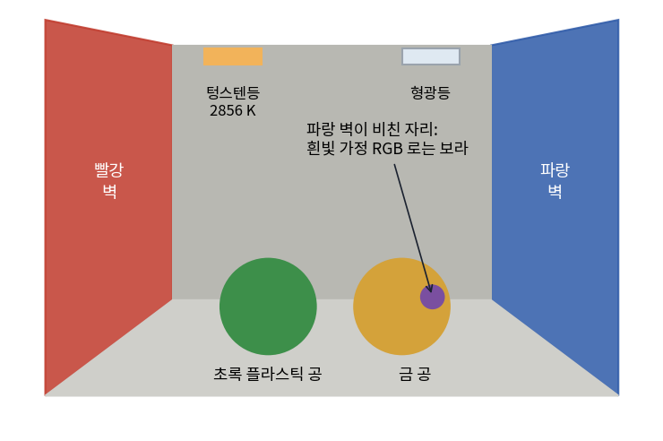
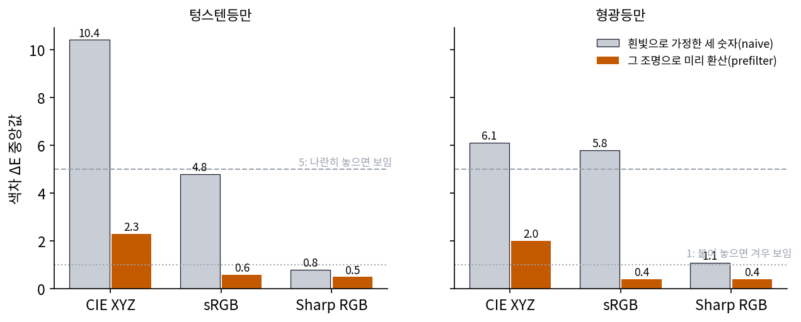
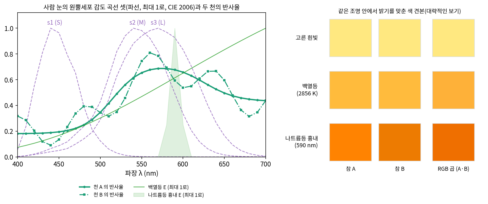
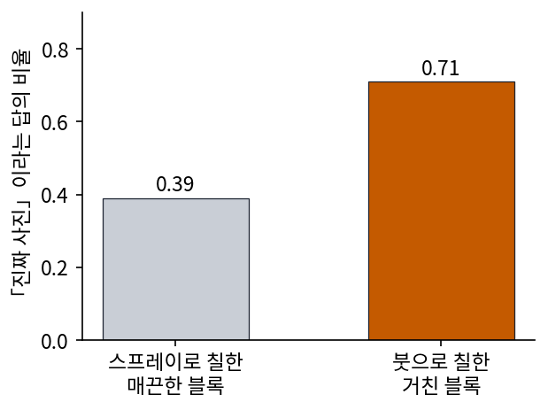
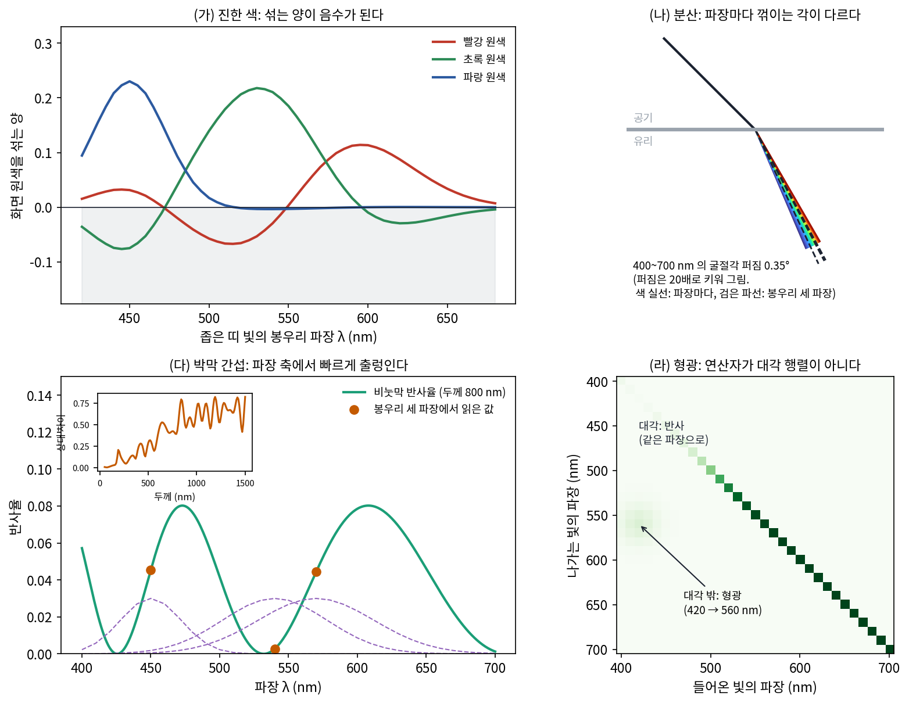
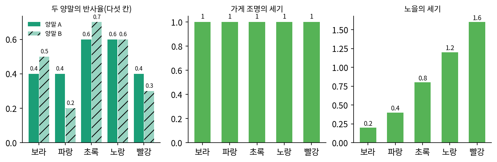
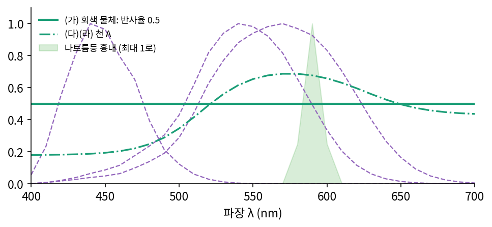
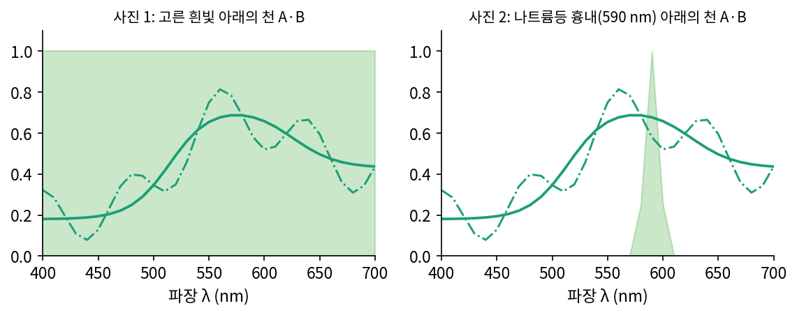
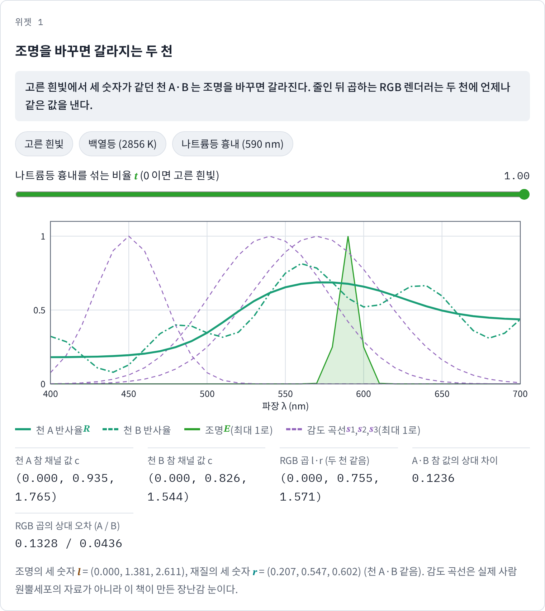
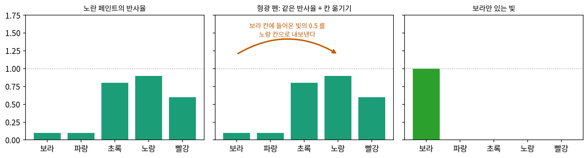

CG 렌더링: 빛의 스펙트럼을 세 숫자로 줄여 그리기
이 장의 물음
요즘 게임은 그래픽 설정을 가장 높게 올리면 머리카락 한 올, 벽돌 사이의 이끼까지 그린다. 그래도 화면을 오래 보면 어딘가 컴퓨터 그래픽(CG)으로 그린 티가 나는데, 실제 사진과 CG 화면 사이의 차이는 한 가지가 아니었다. 물체의 표면은 너무 매끈했고 그림자 경계는 너무 날카로웠다. 피부 속으로 들어갔다 나오는 빛은 1초에 수십 장을 그리는 시간 안에 다 계산하기 어려웠고, 기기의 메모리에 맞추려고 텍스처 해상도를 낮춰야 했다. 햇빛 아래 하늘처럼 화면이 낼 수 있는 것보다 밝은 곳을 눌러 담다가 색이 틀어지기도 했다. 이 차이들은 저마다 다른 기법과 더 큰 계산 예산으로 좁혀져 왔다. 그렇게 좁힌 뒤에도 남는 차이 가운데 하나가 빛을 계산하는 방식 자체다.
뉴턴이 프리즘으로 햇빛을 펼쳐 보였듯, 빛은 파장마다 세기가 다른 띠인 스펙트럼으로 되어 있다. 그런데 게임 엔진은 화면의 칸(화소)마다 빨강·초록·파랑 세 숫자(RGB)만 들고 빛과 반사를 계산한다. 이 책의 말로 하면, 파장 칸마다 값이 있는 스펙트럼을 세 기저에 투영해 계수 셋만 남기고, 그 계수끼리 곱한다. 게임 속 유리구슬이 햇빛을 받아도 바닥에 무지개를 만들지 않는 것은 그 세 숫자 때문일까? 세 숫자로 빛을 곱하는 근사(RGB 라이트 모델)는 어디까지 맞고, 어떤 조명과 재질에서 드러날까?
이 장은 다음 물음에 차례로 답한다.
- 화소마다 세 숫자로 빛을 계산하면 무엇을 잃을까? 그 손실은 어떤 조명과 재질에서 눈에 띌까?
- 다 그린 화면의 색을 나중에 고치면 잃은 것을 어디까지 되찾을까?
- 파장마다 계산하는 렌더러는 끝없이 많은 파장을 몇 개로 어떻게 다룰까?
세 채널 렌더링: 줄인 뒤 곱하면 곱한 뒤 줄인 것과 다르다
빨간 사과에 햇빛이 비친다고 하자. 사과 껍질은 파장마다 빛을 되돌려 보내는 비율(반사율)이 다르고, 햇빛도 파장마다 세기가 다르다. 그래서 사과에서 눈으로 오는 빛은 파장마다 「햇빛의 세기 × 껍질의 반사율」이고, 눈은 그 빛을 받아 세 종류의 원뿔세포로 숫자 셋을 만든다. 게임 엔진은 이 순서를 바꾼다. 햇빛을 미리 세 숫자로, 사과 껍질의 색도 미리 세 숫자로 줄여 두고, 화면을 그릴 때 세 숫자끼리 곱한다. 곱한 뒤 줄이는 것과 줄인 뒤 곱하는 것은 같은 답을 낼까?
역사: 거실 벽 색을 고를 수 있는 렌더링
2002년 유럽 그래픽 학회(Eurographics)의 렌더링 워크숍에서 워드(Greg Ward)와 에이델버그빌레신(Elena Eydelberg-Vileshin)은 이 물음을 숫자로 잰 논문을 냈다. 논문 요약은 상용 렌더링 프로그램 대부분이 조명 계산에 단순한 RGB 모델을 쓰고, 그 결과 색이 올바른 색과 질적으로 다른 경우가 많다고 적었다. 두 사람은 방 하나를 만들었다. 왼쪽 벽은 빨강, 오른쪽 벽은 파랑, 바닥에는 초록 플라스틱 공과 순금 공을 두고, 천장에는 텅스텐등(2856 K)과 백색 형광등을 달았다. 기준 그림은 380~720 nm 를 파장 69개로 나눠, 빛이 지나갈 경로를 무작위로 쏘아 더하는 경로 추적으로 그렸다.

같은 경로를 흰빛을 가정해 줄인 RGB 세 숫자로 다시 그리자 시간은 3분의 1쯤으로 줄었지만 그림이 달라졌다. 빨강 벽과 초록 공의 밝기와 채도가 바뀌었고, 금 공에 비친 파랑 벽은 보라로 나왔으며, 두 색이 사람 눈에 얼마나 달라 보이는지 잰 수인 색차 ΔE(델타 E)가 20 을 넘는 곳이 넓었다. 논문은 거실 벽에 칠할 색을 고르는 것 같은 일에는 받아들일 수 없는 수준이라고 적었다. 두 사람이 내놓은 해법은 재질의 세 숫자를 흰빛이 아니라 그 방의 주 광원 스펙트럼으로 미리 환산해 두는 것이었다(prefiltering). 그렇게 하자 sRGB(흔한 모니터의 RGB 기준)로 그린 그림의 ΔE 중앙값이 텅스텐등에서 4.8 에서 0.6 으로, 형광등에서 5.8 에서 0.4 로 내려갔다. 논문의 기준으로 ΔE 1 은 붙여 놓으면 겨우 보이는 차이이고, 5 쯤이면 나란히 놓았을 때 보인다.

원색을 무엇으로 고르느냐도 크게 갈랐다. 가장 넓은 색 공간인 CIE XYZ(국제조명위원회가 정한 기준 색 공간)로 곱하면 텅스텐등에서 중앙값이 10.4 로 가장 나빴고, 원뿔세포의 응답에 가깝게 고른 Sharp RGB 는 미리 환산하지 않아도 0.8 이었다. 두 등을 함께 켠 방에서는 미리 환산이 잘 듣지 않아, 텅스텐등으로 환산하면 흰빛 가정보다 조금 낫고 형광등으로 환산하면 조금 나빴다.

파장 69개로 그리는 기준 그림이 이미 있었잖아요. 그걸 그냥 쓰면 되지, 왜 세 숫자로 줄이는 방법을 붙들고 고쳤어요?

세 숫자로 그린 쪽이 3분의 1 시간에 끝났다고 했죠. 그리고 재질의 색은 어디서 오죠? 디자이너가 화면에서 고른 색, 사진에서 뽑은 텍스처는 모두 RGB 세 숫자로 적혀 있어요. 그 재질의 파장 69칸짜리 반사율은 누가 재 주나요?

재질마다 반사율을 따로 재야 한다면 RGB 를 버리라는 말은 하기 어려웠겠네요. 세 숫자를 그대로 두고, 그 세 숫자를 어떻게 만드느냐만 바꾼 거군요. 흰빛 대신 방의 조명으로 미리 환산하는 식으로요.

그런데 조명이 둘이면 그 요령이 안 들었다면서요. 어느 조명으로 환산할지 하나를 골라야 하니까요.

그래서 남는 물음이 있어요. 세 숫자로 줄이는 순간 무엇이 사라지길래, 조명이 바뀌면 다시 틀어질까요?
천 두 장과 조명 셋
줄이는 순간 무엇이 사라지는지 보려면, 파장을 직접 다룰 수 있을 만큼 작은 눈이 필요하다. 이 장에서는 400~700 nm 를 10 nm 간격 31칸으로 나누고, 봉우리가 450, 540, 570 nm 인 종 모양 감도 곡선 셋을 장난감 눈으로 쓴다. 실제 사람 원뿔세포의 감도 자료가 아니라 이 책이 만든 곡선이고, 둘째와 셋째 곡선이 크게 겹친다는 점만 흉내 냈다(두 곡선을 31칸 벡터로 보면 코사인 0.867). 조명은 파장마다 세기가 같은 고른 흰빛, 2856 K 로 달군 물체가 내는 빛(흑체 복사, 플랑크 식)으로 만든 백열등, 590 nm 둘레에만 빛이 있는 나트륨등 흉내 셋이다.
눈이 만드는 숫자는 「조명 × 반사율」을 감도 곡선 하나하나와 칸마다 곱해 더한 것이다. RGB 렌더러는 조명과 반사율을 따로 감도 곡선에 대어 세 숫자씩으로 줄인 뒤 곱한다.
참 채널 값 cj 는 빛의 스펙트럼 31칸을 감도 곡선 셋과 내적해 얻으므로, 기저 이야기에서 본 「계수는 기저 벡터와의 내적」과 계산이 같다. 다만 두 가지가 다르다. 감도 곡선끼리 직각이 아니고, 무엇보다 31칸을 세 숫자로 줄이므로 원래 스펙트럼을 되살릴 수 없다. 세 곡선 모두와 내적이 0 인 방향이 31 − 3 = 28 개나 남고, 그 방향으로 스펙트럼을 아무리 바꿔도 눈은 알아채지 못한다.
그 28 개 방향 가운데 하나로 반사율을 바꿔 천 두 장을 만들었다. 천 A 는 초록빛이 도는 노란 천이고, 천 B 는 천 A 에 칸마다 최대 0.15 씩 오르내리는 출렁임을 더한 것이다. 출렁임은 세 감도 곡선 모두와 내적이 0 이 되게 골랐다.

| 조명 | 천 A 의 참 값 | 천 B 의 참 값 | RGB 곱(두 천 같음) | A·B 의 상대 차이 |
|---|---|---|---|---|
| 고른 흰빛 | (0.2065, 0.5465, 0.6017) | (0.2065, 0.5465, 0.6017) | (0.2065, 0.5465, 0.6017) | 0 |
| 백열등 | (0.0750, 0.5186, 0.6759) | (0.0794, 0.5194, 0.6754) | (0.0719, 0.4864, 0.6630) | 0.0053 |
| 나트륨등 흉내 | (0, 0.9354, 1.7652) | (0, 0.8262, 1.5438) | (0, 0.7549, 1.5709) | 0.1236 |
고른 흰빛 아래 두 천은 세 숫자가 소수점 넷째 자리까지 같다. 백열등 아래에서는 0.5% 남짓 갈라지고, 나트륨등 흉내 아래에서는 12% 갈라져 천 B 가 눈에 띄게 어둡다. 이렇게 스펙트럼이 다른데 한 조명 아래 같은 세 숫자를 내는 일을 메타메리즘 (스펙트럼이 달라도 같은 색으로 보이는 일 / metamerism)이라 하고, 그렇게 같은 세 숫자를 내는 두 스펙트럼을 메타머라 부른다. 옷 가게 조명 아래 같던 두 옷이 햇빛 아래에서 달라 보이는 일이 메타메리즘이다.
RGB 렌더러는 이 갈라짐을 원리적으로 그릴 수 없다. 재질의 세 숫자 rj 를 흰빛으로 줄여 두었으므로 천 A 와 천 B 의 rj 가 같고, 그러면 어떤 조명 lj 를 곱해도 두 천은 같은 값을 받는다. 오차도 조명에 따라 다르다. 천 A 의 RGB 곱은 백열등에서 참 값과 4.07%, 나트륨등 흉내에서 13.3% 다르다. 나트륨등 흉내는 590 nm 둘레의 빛만 있으니 두 천의 590 nm 반사율만 결과를 정하는데, 흰빛으로 줄인 세 숫자에는 590 nm 칸 하나의 반사율이 따로 남아 있지 않기 때문이다.
여러 겹의 차이에서 남는 것
그러면 게임 화면의 CG 티는 줄인 뒤 곱하기에서 오는가? 측정된 근거는 먼저 다른 겹을 가리킨다. 2001년 라데마허(Paul Rademacher), 렝겔(Jed Lengyel), 커트렐(Edward Cutrell), 휘티드(Turner Whitted)는 사람에게 그림을 한 장씩 보여 주고 「진짜 사진인가」만 물어, 어떤 요인이 그 답을 바꾸는지 쟀다. 표면의 매끈함을 잰 실험에는 진짜 사진만 썼다. 흰 스프레이로 매끈하게 칠한 블록과 거친 붓으로 칠한 블록을 찍었는데, 18명이 「진짜」라고 답한 비율은 매끈한 블록 0.39, 거친 블록 0.71 이었다. 그림자 경계의 부드러움도 효과가 있었지만 매끈함보다 약했고, 광원의 수와 물체의 수는 효과가 없었다.

논문은 표면에 질감이 없으면 그것만으로 빛의 수송 계산의 어떤 오차보다 사실감이 크게 떨어질 수 있다고 적었다. 표면 질감과 그림자는 빛을 몇 숫자로 계산하느냐보다 먼저 사실감을 깎는 겹이었다. 세 숫자로 빛을 곱하는 근사는 그런 겹을 좁힌 뒤에도 남는 차이 가운데 하나다. 여러 원인의 비중을 한 실험에서 함께 잰 연구는 찾지 못했으므로, 이 장은 「RGB 라서 CG 티가 난다」고 말하지 않는다. 천 A 에서 본 대로 고른 흰빛 아래에서는 RGB 곱이 참 값과 같고 백열등에서도 4% 남짓 다를 뿐이지만, 나트륨등 흉내 같은 좁은 띠 조명에서는 13% 다르다. 세 숫자 근사는 어떤 조명과 재질을 만나느냐에 따라 맞기도 하고 드러나기도 한다.
세 숫자가 드러나는 자리
어디서 드러나는지 이 책의 말로 정리해 보자. 조명 스펙트럼과 반사율은 파장 칸 31개를 축으로 삼는 기저 위의 계수 31개다. 반사는 칸마다 「조명 × 반사율」을 곱하는 일이므로, 파장 칸 기저에서 물체는 대각선에만 반사율이 놓인 31 × 31 대각 행렬로 빛에 작용한다. 눈은 그렇게 나온 빛의 계수 31개를 감도 곡선 세 개에 투영해 계수 셋을 만든다. RGB 렌더러는 이 투영을 곱셈보다 먼저 해 두고, 3 × 3 대각 행렬(채널마다 곱하기)로 빛을 다룬다. 이 근사가 맞으려면 적어도 네 가지가 성립해야 한다. 투영과 곱셈의 순서를 바꿔도 결과가 같아야 하고, 빛이 지나가는 경로가 파장에 따라 갈리지 않아야 하며, 반사율이 파장 축에서 감도 곡선보다 천천히 바뀌어야 하고, 물체가 빛을 다른 파장 칸으로 옮기지 않아야 한다. 각각이 깨지는 자리를 장난감으로 하나씩 보자. 숫자는 모두 이 책이 지은 설정에서 계산한 것이다.

첫째는 지금까지 본 좁은 띠 조명과 메타메리즘이다. 조명과 반사율이 둘 다 파장에 따라 바뀌면 투영한 뒤 곱한 값과 곱한 뒤 투영한 값이 갈라진다. 나트륨등 흉내처럼 빛이 좁은 띠에 몰릴수록 그 차이가 커졌다.
진한 색도 같은 뿌리에서 드러난다. 모니터는 빨강·초록·파랑 원색 세 개를 섞어 색을 낸다. 장난감에서 봉우리 610, 545, 465 nm 의 넓은 종 모양 원색 셋을 두고, 좁은 띠 빛 하나와 장난감 눈의 세 숫자가 같아지도록 섞는 양을 풀었다. 500 nm 빛은 (빨강, 초록, 파랑) = (−0.057, 0.140, 0.017)이 나와 빨강을 음수만큼 섞어야 했고, 420~680 nm 를 5 nm 간격으로 옮겨 본 53곳 모두에서 섞는 양 가운데 하나 이상이 음수였다. 반면 고른 흰빛 아래 천 A 는 (0.402, 0.700, 0.253)으로 셋 다 양수다. 원색 세 개도 기저이고 섞는 양은 그 기저 위의 계수인데, 원색끼리 겹치므로 아주 좁은 띠의 빛은 다른 원색을 빼야만 적힌다. 페터스의 2025년 블로그 글도 500 nm 한 파장 빛을 sRGB 로 적으면 (−1, 1, 0.36)처럼 음수 채널이 나온다고 보였다. 음수 빛은 화면이 낼 수 없으므로, 채도가 아주 높은 색은 세 숫자의 상자 밖에 있다. 반대로 형광 펜처럼 아주 밝고 진한 색은 0~1 사이 반사율만으로 만들 수 없어, 융(Jung)과 동료들(2019)은 RGB 색을 스펙트럼으로 바꿀 때 형광 성분을 더하는 방법을 냈다.
분산은 경로가 파장마다 갈리는 경우다. 유리의 굴절률은 파장이 짧을수록 커서, 같은 방향으로 들어온 빛도 파장마다 다른 각으로 꺾인다. 흔한 광학 유리에 가까운 값으로 굴절률을 n(λ) = 1.5046 + 4200/λ² (λ 는 nm)로 흉내 내면, 45° 로 들어온 빛이 400 nm 에서 27.51°, 700 nm 에서 27.86° 로 꺾여 0.35° 퍼진다. 이 퍼짐이 프리즘과 유리구슬의 무지개다. 세 숫자로 계산하는 렌더러는 채널마다 각을 하나씩 정할 수밖에 없으므로 이어진 띠 대신 많아야 빛줄기 세 개를 그린다. 더 근본적으로, RGB 렌더러는 「경로는 하나, 그 위에서 채널마다 곱하기」를 전제로 하는데 분산은 파장마다 경로가 달라 그 전제가 서지 않는다. 교과서 『물리 기반 렌더링』 4판도 분산과 간섭색은 스펙트럼으로 계산해야 자연스럽게 나온다고 적었다.
박막 간섭은 반사율이 파장 축에서 빠르게 출렁이는 경우다. 비눗방울이나 물 위의 기름막처럼 얇은 막의 앞뒤에서 반사된 두 빛이 파장마다 다르게 보강되거나 상쇄된다. 굴절률 1.33, 두께 d 인 막의 반사율을 두 빛의 간섭으로 흉내 내면 4 r² sin²(2π · 1.33 · d / λ) (r = 0.142 는 막 표면에서 한 번 반사되는 빛의 진폭 비율)이다. 세 숫자를 가장 손쉽게 얻는 방법은 감도 곡선의 봉우리 세 파장(450, 540, 570 nm)에서 반사율을 읽는 것이다. 봉우리 세 파장에서 읽는 일은 파장 축을 세 점으로 샘플링하는 일이다. 두께 100 nm 에서는 400~700 nm 사이에서 반사율이 0.29번 오르내릴 만큼 느리게 바뀌어, 세 점에서 읽은 값과 감도 곡선과 내적한 참 세 숫자의 상대 차이가 1.1% 다. 800 nm 에서는 2.28번 오르내려 상대 차이가 43%, 1500 nm 에서는 4.28번 오르내려 83% 다. 1500 nm 의 참 세 숫자는 (0.040, 0.040, 0.040)으로 색이 거의 빠졌는데, 세 점에서 읽으면 (0.013, 0.071, 0)으로 없던 진한 색이 나온다. 샘플 간격보다 빠른 물결이 다른 물결로 둔갑하는 에일리어싱이 파장 축에서 일어난 것이다. 벨쿠르(Laurent Belcour)와 바를라(Pascal Barla)는 2017년에 박막의 스펙트럼 응답을 미리 적분해 두어 RGB 렌더러에서도 박막 간섭을 그리게 하는 방법을 냈다.
형광은 물체가 빛을 다른 파장 칸으로 옮기는 경우다. 형광 물질은 짧은 파장의 빛을 흡수해 긴 파장으로 내놓는다. 파장 칸 기저에서 보면 반사는 대각 행렬인데, 형광은 대각선 밖(들어온 칸 ≠ 나가는 칸)에 값을 둔다. 장난감 형광 펜(420 nm 둘레를 흡수해 560 nm 둘레로 내놓음)을 고른 흰빛 아래 두면, 칸 31개 가운데 6개에서 들어온 빛보다 많은 빛이 나가고(가장 큰 칸 1.495배), 이것은 0~1 사이 반사율로는 적을 수 없는 값이다. 420 nm 둘레의 좁은 띠 빛을 비추면 참 세 숫자는 (0.041, 1.423, 1.433)인데, 흰빛으로 줄인 재질의 세 숫자를 곱한 RGB 곱은 (0.210, 0.025, 0.006)이다. 칸마다 곱하는 대각 행렬로는 31칸이든 세 칸이든 들어온 빛이 없는 칸에 빛을 만들 수 없다.
네 자리는 모두 어떤 조명이나 재질을 만날 때 생긴다. 흰빛에 가까운 조명과 매끈한 반사율로 된 장면에서는 세 숫자 곱이 참 값에 가깝다. 그래서 세 숫자 근사는 실시간 렌더링에서 오래 쓰였고, 그 한계는 다른 차이가 좁혀진 화면에서 이런 조명과 재질을 만날 때 드러난다.
ML에서: 사진 한 장의 세 숫자로 배우는 모델
사진으로 학습하는 신경망도 같은 처지에 있다. 카메라는 장면의 스펙트럼을 감도 곡선 셋으로 줄여 화소마다 세 숫자를 저장하고, 모델은 그 세 숫자만 받는다. 천 A 와 천 B 를 고른 흰빛 아래 찍은 사진은 모델에게 같은 입력이므로, 어떤 모델이든 같은 출력을 낸다. 학습을 더 오래 하거나 모델을 키워서 갈라질 수 있는 차이가 아니고, 입력을 늘려야만 생기는 차이다. 조명을 바꾼 사진을 한 장 더 주면 무엇이 달라지는지는 아래 문제 3에서 센다.
문제 1. 옷 가게에서 같았던 두 양말
빛을 다섯 칸(보라, 파랑, 초록, 노랑, 빨강)으로만 적는 장난감 세계가 있다. 눈의 세 숫자는 칸마다의 「조명 × 반사율」에 가중치를 곱해 더한 것으로, 첫째는 (2, 1, 0, 0, 0), 둘째는 (0, 1, 2, 1, 0), 셋째는 (0, 0, 1, 2, 1)이다. 양말 A 의 반사율은 (0.4, 0.4, 0.6, 0.6, 0.4), 양말 B 는 (0.5, 0.2, 0.7, 0.6, 0.3)이다. (가) 칸마다 세기가 1 인 가게 조명 아래 두 양말의 세 숫자를 구하라. (나) 노을빛 (0.2, 0.4, 0.8, 1.2, 1.6) 아래에서는? (다) 양말 A 와 세 숫자가 같으면서 반사율이 다른 양말은 얼마나 많이 만들 수 있는가?

(가)는 그냥 곱해 더하면 되죠. A 의 첫째는 2 × 0.4 + 0.4 = 1.2, 둘째는 0.4 + 1.2 + 0.6 = 2.2, 셋째는 0.6 + 1.2 + 0.4 = 2.2. B 는 2 × 0.5 + 0.2 = 1.2, 0.2 + 1.4 + 0.6 = 2.2, 0.7 + 1.2 + 0.3 = 2.2. 어, 셋 다 같네요.
반사율은 다섯 칸 중 네 칸이 다른데 세 숫자는 같아. 그래서 가게에서는 같은 색으로 보였겠다.
(나)의 노을빛은 빨강 쪽이 세요. 칸마다 조명을 먼저 곱해 보세요.
A 는 (0.08, 0.16, 0.48, 0.72, 0.64)이고 세 숫자는 (0.32, 1.84, 2.56), B 는 (0.10, 0.08, 0.56, 0.72, 0.48)이고 (0.28, 1.92, 2.48)이에요. 이번엔 다 달라요.
(다)는 어떻게 따져 볼까요? 두 양말의 차이 B − A 를 먼저 적어 보세요.
(0.1, −0.2, 0.1, 0, −0.1)이요. 이걸 세 가중치에 대면 2 × 0.1 − 0.2 = 0, −0.2 + 0.2 + 0 = 0, 0.1 + 0 − 0.1 = 0. 세 가중치 모두와 내적이 0 인 방향이네요.

그런 방향이 몇 개나 있을까요… 칸이 다섯이고 조건이 셋이니까, 일단 자유롭게 고를 수 있는 수가 두 개쯤 남을 것 같아요.
그 두 개 가운데 하나를 직접 만들어 볼까요? 첫째 칸을 0 으로 두고요.

첫째 칸이 0 이면 첫째 조건에서 둘째 칸도 0 이에요. 셋째 칸을 0.1 로 두면 둘째 조건에서 넷째 칸이 −0.1, 셋째 조건에서 다섯째 칸이 0.1 이고요. (0, 0, 0.1, −0.1, 0.1)이요. 이 두 방향을 섞으면 되니까, 반사율이 0~1 안에만 들면 끝없이 많이 만들 수 있어요.

건강 검진 표에 키, 몸무게, 허리둘레 세 숫자만 적으면 몸이 달라도 같은 사람처럼 적히는 거네. 오래달리기를 시켜 보는 순간 갈리고. 세 숫자가 가게 조명 아래의 세 숫자, 오래달리기가 노을빛이야.
문제 2. RGB 곱이 맞는 두 경우
본문의 장난감 눈에서 RGB 렌더러의 값은 lj rj, 참 값은 Σ sj E R 이다. (가) 반사율이 모든 파장에서 0.5 인 회색 물체는 어떤 조명 아래에서도 RGB 곱이 참 값과 같다. 왜인가? (나) 조명이 고른 흰빛(모든 칸 1)이면 어떤 물체든 RGB 곱이 맞는다. 왜인가? (다) 천 A 를 나트륨등 흉내 아래 그리면 RGB 곱은 얼마나 틀리는가? (라) 천 A 의 세 숫자를 흰빛 대신 백열등으로 미리 환산해 r′j = (Σ sj E백열 R) / lj 로 두면 백열등 아래에서는 맞는다. 이 r′ 을 고른 흰빛이나 나트륨등 흉내 아래에 쓰면 어떻게 되는가?

(가)부터 식으로 볼게요. 반사율이 모든 칸에서 0.5 면, 참 값의 합에서 0.5 를 밖으로 꺼낼 수 있어요. Σ sj E × 0.5 = 0.5 lj.
RGB 렌더러 쪽은요? rj 를 먼저 구해 봐요.
rj 는 Σ sj × 0.5 인데, 감도 곡선 합이 1 이니까 0.5 예요. 그럼 lj rj = 0.5 lj. 참 값과 같아요.
스크립트로도 확인했어. 고른 흰빛 (0.5, 0.5, 0.5), 백열등 (0.1741, 0.4450, 0.5509), 나트륨등 흉내 (0, 0.6906, 1.3053)인데 세 조명 다 RGB 곱과 참 값이 같아.
(나)도 같은 식이네. 이번엔 E 가 1 이라서 밖으로 나오니까 참 값은 Σ sj R = rj, 그리고 lj = Σ sj = 1.

두 경우의 공통점을 한 문장으로 말해 볼까요? 곱하는 두 스펙트럼 가운데 무엇이 어떠면 순서를 바꿔도 되죠?
둘 중 하나가 파장마다 같은 값이면, 그게 상수라서 합 밖으로 나와요. 그러면 줄이는 일과 곱하는 일의 순서를 바꿔도 돼요. 둘 다 파장에 따라 바뀌면 안 되고요.
(다)는 둘 다 바뀌는 경우죠. 참 값 (0, 0.9354, 1.7652), RGB 곱 (0, 0.7549, 1.5709)이라 상대 오차가 0.1328 이에요.
(라)는요? 백열등으로 미리 환산한 세 숫자를 다른 조명에 쓰면요.

r′ = (0.2153, 0.5827, 0.6135)예요. 백열등 아래에서는 참 값과 똑같은데, 고른 흰빛에서는 0.0465, 나트륨등 흉내에서는 0.1048 틀려요. 흰빛 가정으로 줄인 것보다 고른 흰빛 아래서는 오히려 나빠졌어요.
미리 환산하는 건 그 조명 하나를 상수처럼 만들어 주는 요령이네요. 조명이 둘인 방에서 잘 안 들은 것도 그래서고요.
여행 가기 전에 한 나라 돈으로 미리 바꿔 두면 그 나라에서는 딱 맞는데, 다른 나라에 가면 그 돈을 다시 바꾸느라 손해를 보는 거랑 비슷하네요. 백열등으로 미리 환산한 세 숫자가 그 나라 돈이고요.
문제 3. 사진 한 장, 사진 두 장
천 A 와 천 B 를 가르는 재질 분류 모델을 만드는데, 입력은 장난감 눈과 같은 감도 곡선을 가진 카메라로 찍은 사진의 세 숫자다. (가) 고른 흰빛 아래 찍은 사진 1 만 쓰면 이 모델은 두 천을 가를 수 있는가? (나) 나트륨등 흉내 아래 찍은 사진 2 를 함께 주면 입력은 어떻게 달라지는가? 두 천의 숫자는 얼마나 다른가? (다) 사진 두 장의 숫자 여섯 개로는 31칸 반사율을 모두 가를 수 있는가?

(가)는 학습을 많이 하면 되지 않을까요? 미묘한 차이를 신경망이 잡아낼 수도 있잖아요.
사진 1 에서 두 천의 숫자는 얼마였죠?
둘 다 (0.2065, 0.5465, 0.6017)이요. 아, 입력이 소수점까지 같으면 신경망이 아무리 커도 같은 출력이 나오네요. 함수니까요.
(나)는 사진 2 가 숫자 세 개를 더 주는 거야. 나트륨등 흉내 아래 A 는 (0, 0.9354, 1.7652), B 는 (0, 0.8262, 1.5438)이니까 상대 차이가 0.1236. 이제는 가를 수 있어.
(다)는 숫자를 세어 봐요. 사진 한 장이 감도 곡선 셋과의 내적을 주면, 사진 두 장은 무엇을 주나요?
조명 × 감도 곡선 여섯 개와의 내적이요. 그럼 31칸 가운데 많아야 여섯 방향만 보이고, 나머지 25 방향 이상은 여전히 안 보여요.

잠깐, 사진 2 의 첫째 숫자는 두 천 다 0 이었어요. 나트륨등 흉내 빛에는 첫째 감도 곡선이 닿지 않으니까요. 그럼 여섯 개도 다 쓰는 게 아니네요.
맞아요. 나트륨등 흉내 아래에서는 둘째와 셋째 숫자도 거의 같은 비율로 움직여요. 좁은 띠 조명 아래 찍은 사진 한 장은 새 숫자 셋을 다 주지 못해요.

그럼 메타머를 가르려면 조명을 바꿔 찍은 사진을 늘려야 하고, 그것도 빛의 띠가 서로 다른 조명이어야 하네요. 같은 띠의 조명으로 열 장을 찍어도 새로 보이는 방향은 늘지 않으니까요.

문제 4. 형광 펜은 반사율로 적을 수 있을까
문제 1 의 다섯 칸 세계(눈의 가중치 (2, 1, 0, 0, 0), (0, 1, 2, 1, 0), (0, 0, 1, 2, 1))에 노란 페인트와 노란 형광 펜이 있다. 페인트의 반사율은 (0.1, 0.1, 0.8, 0.9, 0.6)이다. 형광 펜은 같은 반사율에 더해, 보라 칸에 들어온 빛의 0.5 를 노랑 칸으로 내보낸다. (가) 칸마다 세기가 1 인 고른 빛 아래 두 물체가 내보내는 빛과 세 숫자를 구하라. (나) 형광 펜을 칸마다의 반사율 다섯 개로 적으려면 노랑 칸에 얼마를 적어야 하는가? 그 다섯 숫자로 보라만 있는 빛 (1, 0, 0, 0, 0) 아래의 형광 펜을 그리면 맞는가? (다) RGB 렌더러는 보라만 있는 빛을 세 숫자로 줄여 재질의 세 숫자와 채널마다 곱한다. 재질의 세 숫자를 어떻게 고르면 (나)의 형광 펜을 맞힐 수 있는가?

(가)는 페인트부터 할게. 고른 빛이니까 내보내는 빛이 반사율 그대로 (0.1, 0.1, 0.8, 0.9, 0.6)이고, 세 숫자는 0.2 + 0.1 = 0.3, 0.1 + 1.6 + 0.9 = 2.6, 0.8 + 1.8 + 0.6 = 3.2.
형광 펜은 보라 칸 빛 1 의 0.5 가 노랑 칸에 더해지니까 노랑 칸이 0.9 + 0.5 = 1.4. 내보내는 빛은 (0.1, 0.1, 0.8, 1.4, 0.6)이고 세 숫자는 (0.3, 3.1, 4.2). 둘째와 셋째가 페인트보다 커.
그럼 (나)는 쉽네. 노랑 칸 반사율을 1.4 로 적으면 고른 빛 아래서는 똑같이 나오잖아.
고른 빛 아래서는 그렇죠. 그 다섯 숫자를 보라만 있는 빛에 대 보면요?
칸마다 곱하면 (0.1, 0, 0, 0, 0)이니까 세 숫자는 (0.2, 0, 0)이에요. 진짜 형광 펜은 보라 칸 빛의 0.5 를 노랑 칸으로 내보내니까 (0.1, 0, 0, 0.5, 0), 세 숫자는 (0.2, 0.5, 1.0)이고요. 둘째와 셋째가 하나도 안 맞아요.
아, 노랑 칸에 적은 1.4 가운데 0.5 는 노랑 칸에 들어온 빛이 아니라 보라 칸에서 온 빛이었구나. 고른 빛 하나에서만 맞춘 숫자였네. 반사율이 1 을 넘는다는 것부터 이상했어야 했는데.
(다)는 보라만 있는 빛의 세 숫자부터 구해 볼까요?
첫째 가중치만 보라 칸에 닿으니까 (2, 0, 0)이에요. 여기에 재질의 세 숫자 (r₁, r₂, r₃)를 채널마다 곱하면 (2r₁, 0, 0)이라, 무엇을 골라도 둘째와 셋째가 0 이에요. 참 값은 0.5 와 1.0 인데요.
채널마다 곱하는 건 빛이 들어온 채널에서만 빛이 나오게 하니까, 빛이 없던 채널에 빛을 만들 수가 없구나.
그 말을 행렬로 해 볼까요? 다섯 칸짜리 빛을 받아 다섯 칸짜리 빛을 내보내는 일을 5 × 5 행렬로 적으면, 페인트는 어떤 행렬이고 형광 펜은 어디가 다르죠?
페인트는 대각선에 반사율 다섯 개만 있는 대각 행렬이에요. 형광 펜은 거기에 넷째 줄 첫째 칸의 0.5 가 하나 더 있고요. 들어온 칸과 나가는 칸이 다른 자리요.
그래요. 칸마다 곱하는 렌더러는 대각 행렬만 적을 수 있고, 세 숫자를 곱하는 렌더러는 3 × 3 대각 행렬만 적을 수 있어요. 형광을 그리려면 파장마다 계산하는 렌더러라도 재질을 대각선 밖까지 있는 행렬로 들고 있어야 해요.